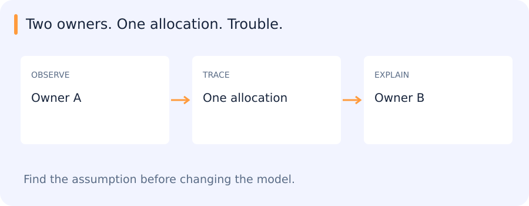

A program reads an image into memory and hands the image buffer to another part of the code. Someone must decide when that memory can be released. In C++, ownership and lifetime make this decision visible. The same edge-computing setting also makes builds, dependencies and representation costs worth inspecting.
Jump to a concept
Why retain this route
The archived Vortex route covered C/C++, compilation, Make/CMake and edge models. It is a role-specific reference, not a new requirement for the Python researcher track. It remains visible so old reading subjects are not silently deleted. Internal exercise repositories and organization-specific tool walkthroughs still require their owners' access and exact materials.
Compilation and memory
Read an error by asking who produced it
Suppose main.cpp calls area(width, height), a function declared in geometry.hpp and implemented in geometry.cpp. The declaration lets the compiler check the call while translating main.cpp. It tells the compiler which argument types the function expects and what it returns.
Each source file can be compiled into an object file. The object for main can still contain an unresolved reference to area. The linker joins the compiled pieces and resolves that reference. If the build omits geometry.cpp, main.cpp may compile successfully and the linker can still report an undefined reference.
A missing declaration usually means checking the header, include path or spelling. A missing definition at link time means checking whether the implementation was built, linked and compiled with the same signature. Rebuilding everything may hide an incremental-build issue, but reading the first failing stage tells you where to look.
A C/C++ build preprocesses source, compiles translation units, assembles object code and links definitions into a program or library. A declaration tells the compiler an interface; a definition provides storage or implementation. Missing symbols are often link-time problems, while incompatible declarations can create subtler errors. Header dependencies and compiler flags form part of a reproducible build.
An array is a contiguous sequence; a pointer stores an address. An array can decay to a pointer in many expression contexts, but the array object and a pointer object are not interchangeable. A pointer alone does not carry the allocation length or ownership. Stack lifetime, heap allocation and object lifetime differ. A dangling pointer can appear to work before later memory reuse reveals the bug. Buffer bounds and correct allocation/deallocation pairs are essential.
Ownership in C++
RAII binds resource lifetime to object lifetime, so destruction releases the resource even during exceptions. A unique pointer represents exclusive ownership; a shared pointer uses shared ownership and reference counting; a weak pointer observes shared ownership without extending it. Cycles of strong shared pointers can retain objects indefinitely. Raw pointers and references can be useful nonowning views when lifetime is clear.
Copying an owning raw pointer without a policy can lead to double deletion. The historical “Big Two” rule discussed designing copying and destruction together; modern code also considers move operations and usually favors the rule of zero by delegating resources to standard types. Move transfers or reuses resources under a type's defined semantics; it is not a promise that every moved-from object is empty. Standard containers and smart pointers reduce bespoke ownership code.
Decide who keeps an image buffer alive
A decoder allocates a buffer and returns it to a caller. The caller hands a read-only view to a feature extractor. If the extractor uses the view only during that call, the caller can retain ownership. If the extractor queues asynchronous work and keeps the view, the buffer must stay alive until that work finishes. A view that still contains an address does not prove that the underlying object is available.
One design transfers exclusive ownership to the queued work. Another makes a copy, which can be reasonable when the data is small. Shared ownership can work if several consumers genuinely need independent lifetimes, at the cost of less obvious release timing. Pick a representation that expresses which component can keep the data and for how long. The right question to ask at review is when the memory can be released, and what proves every consumer is finished.
Copying an address does not copy ownership
Two objects hold the same raw pointer to one allocation. If both believe they own it and both destructors delete it, the second deletion is invalid. Copying the address was easy; deciding what the copy means was the important design question.

C++ ownership tools make that decision more explicit. Exclusive ownership, shared ownership and a borrowed view carry different lifetime expectations. A view can remain a valid address value after the object it referred to has already been destroyed.
This archived edge-computing route uses those ideas to connect program behaviour with resource management, builds and runtime efficiency.
Self-check
An asynchronous task retains a view into a caller-owned buffer. What must hold until the task finishes?
- A. The underlying buffer stays alive
- B. The compiler disables optimization
- C. The view's numeric address stays the same, regardless of lifetime
- D. The caller's function returns immediately
Show answer and explanation
A. The underlying buffer stays alive
A view borrows access. Its address does not extend the lifetime of the data it refers to.
Modern language features
C++11 introduced broad support for move semantics, lambdas, type inference and standard concurrency facilities. Later standards add tools such as structured bindings, optional/variant, concepts and ranges. Exact compiler and standard-library support must be checked for a chosen toolchain. The learning goal is to write explicit ownership and clear interfaces, not memorize a feature release list. A fast matrix-multiplication exercise illustrates cache blocking, layout, vectorization and the need to verify numerical results before claiming speed.
Make, CMake and linker maps
Make rebuilds targets based on dependency relationships and freshness rules. Automatic header dependency generation prevents a changed header from leaving stale object files. Separate build directories/configurations for different architectures avoid mixing incompatible objects. CMake generates a build system from higher-level target/dependency definitions; it is not the compiler. Record toolchain, build type, flags and linked libraries.
A linker map shows placement and contributions of symbols/sections, useful for diagnosing code/data size on constrained systems. Dead-code elimination, alignment and template instantiations affect binary size. Measure both build reproducibility and execution behavior, including a clean rebuild rather than only an incremental one.
Self-check
Changing a shared header should affect two translation units, but neither rebuilds. What should you inspect first?
- A. Whether the build graph records dependencies on the header
- B. The model's training loss
- C. The shape of the output tensor
- D. The image format
Show answer and explanation
A. Whether the build graph records dependencies on the header
Incremental builds rely on dependency edges. Missing header dependencies can leave stale objects in the build.
Binary neural networks
Binarized-network methods constrain some weights and activations to binary values, enabling compact storage and potentially efficient bitwise operations. Training commonly keeps higher-precision latent weights and uses surrogate gradients around non-differentiable quantization. The benefit depends on supported operations, packing and hardware; a binary model is not automatically faster on every GPU. First/last layers may use different precision. Compare accuracy, memory and actual end-to-end latency under the chosen implementation.
Following a small C++ build
For an edge-role extension, a small multi-file program is enough to expose ownership and build dependencies. Changing a header should rebuild the affected targets; a clean rebuild checks whether the incremental build was hiding stale objects. Compiler or precision changes then need output comparisons as well as timing. The historical Snake, QR-reader and GEMM exercises remain options for that route.
Original source references and provenance
Original teaching text covering the cited topics, not a verbatim mirror. These references are provenance; no external reading is required to use this chapter.
- http://c-faq.com/
- http://make.mad-scientist.net/papers/advanced-auto-dependency-generation/
- http://make.mad-scientist.net/papers/multi-architecture-builds/
- http://www.cplusplus.com/doc/tutorial/
- http://www.ericbrasseur.org/cppcen.html
- https://arxiv.org/abs/1602.02830
- https://berthub.eu/articles/posts/cpp-intro/
- https://docs.google.com/presentation/d/1XTYlX8d0c-5N5RRqymkGA0HoNu9oQmgcORKBZ5_61Uc/edit
- https://github.com/CVBranch/Fast-GEMM
- https://github.com/CVBranch/QR-Reader
- https://github.com/planetchili/snek
- https://hackaday.com/2019/07/30/c20-is-feature-complete-heres-what-changes-are-coming/
- https://interrupt.memfault.com/blog/get-the-most-out-of-the-linker-map-file
- https://medium.com/@__r/installing-clion-on-windows-for-c-c-newbies-like-me-4a346aaf9557
- https://smartbear.com/blog/develop/the-biggest-changes-in-c11-and-why-you-should-care/
- https://www.artima.com/cppsource/bigtwo.html
- https://www.codingame.com/playgrounds/2205/7-features-of-c17-that-will-simplify-your-code/introduction
- https://www.cprogramming.com/challenge.html?inl=nv
- https://www.geeksforgeeks.org/difference-pointer-array-c/
- https://www.gnu.org/software/make/manual/make.html
- https://www.learn-c.org/
- https://www.tutorialspoint.com/makefile/why_makefile.htm